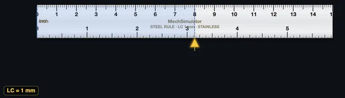

Steel Ruler Simulator
Interactive length measurement trainer — 0–150 mm — LC = 1 mm
1 Overview
This steel ruler simulator is a free online measurement practice tool covering 0 to 150 mm with 0.5 mm precision. The steel ruler (steel rule) is the most fundamental linear measuring instrument in any engineering workshop, and learning how to read a steel ruler accurately is the first step in metrology training. This simulator is designed for engineering students, foundation engineering trainees, and vocational workshop induction programmes that need to build basic measurement competency and unit conversion skills.
2 Setting the Zero
The page opens in Simulate mode with the cursor positioned at a default value. To start measuring:
- Drag the cursor along the ruler to set any length from 0 to 150 mm. You can also use arrow keys or the scroll wheel for fine adjustment.
- The info row below the ruler shows the reading in three units simultaneously: mm, cm, and metres.
- Use the Zoom button to enlarge the scale and read to the nearest 0.5 mm graduation more easily.
3 Taking a Reading
In Simulate mode the cursor moves freely along the ruler. As you drag it, the digital readout, readout badges, and the formula panel update in real time, showing the millimetre value and its conversion to centimetres and metres. This mode helps you become familiar with the scale markings: the longer lines represent whole centimetres (10 mm), medium lines mark 5 mm intervals, and the shortest lines mark individual millimetres. A subtle click sound confirms each snap to a graduation. Understanding these graduations is essential for accurate reading.
4 How the Scale Works
Explore mode provides categorised reference cards covering steel ruler theory, reading techniques, types of rules, and common measurement errors. Browse the tabs — Basics, Reading, Types, and Errors — to deepen your understanding of linear measurement fundamentals. Each card includes key facts, formulas, and practical tips.
5 Practice Readings
Practice mode: The simulator sets a random length and you must read the ruler and type the mm value into the input box. Click Check for instant feedback with the correct answer shown. Click New for another challenge. Your running score is tracked.
Quiz mode: A timed sequence of 5 questions tests your ruler reading speed and accuracy. After all questions, a results panel shows your score, star rating, and a detailed breakdown of each answer.
6 Unit Conversions
This simulator shows every reading in three metric units:
- Millimetres (mm): The primary scale reading, directly from the ruler.
- Centimetres (cm): Divide mm by 10. Example: 75 mm = 7.5 cm.
- Metres (m): Divide mm by 1000. Example: 75 mm = 0.075 m.
Practising these conversions builds the unit fluency expected in engineering drawings and workshop instructions.
7 Tips & Best Practices
- Avoid parallax error by reading the scale from directly above — not at an angle. In this simulator, the zoom feature helps replicate a straight-on view.
- On a real steel ruler, avoid using the worn zero end — start from the 10 mm mark and subtract 10 from the reading to eliminate end wear error.
- For measurements requiring better than 0.5 mm accuracy, use a vernier caliper (0.02 mm) or micrometer (0.01 mm) instead.
- Always confirm whether the drawing dimension is in mm or inches before measuring — mixing units is a common workshop mistake.
How to Use a Steel Ruler — Online Length Measurement Practice

A steel ruler (or steel rule) is the most fundamental linear measuring tool in any engineering workshop. This free online simulator covers 0 to 150 mm with a 0.5 mm least count, matching the standard metric steel rules used in technical and vocational workshops worldwide.
Types of Steel Ruler Compared
| Type | Typical Length | Best For | Key Feature |
|---|---|---|---|
| Rigid Steel Rule | 150–1000 mm | General workshop measurement, layout | Flat, hardened, etched/laser graduations |
| Flexible Steel Rule | 150–600 mm | Curved surfaces, pipes, sheet metal | Thinner steel, bends without permanent deformation |
| Hook Rule | 150–300 mm | Butting against an edge for precise zero | Small hook at the zero end eliminates positioning error |
| Shrink Rule | 150–1000 mm | Foundry pattern-making for cast metals | Slightly longer to compensate for cast-metal contraction |
How to Read a Steel Ruler
Align the zero end of the rule with one edge of the object. Read the value at the other edge — identify the nearest millimetre mark, then check whether the edge falls on a whole millimetre or the 0.5 mm halfway mark. Avoid parallax error by reading straight down from directly above the scale.
Steel Ruler vs Higher Precision Tools
A steel rule has the lowest precision (0.5 mm) in the family of linear measuring tools. For higher accuracy use a Vernier caliper (0.02 mm) or a micrometer (0.01 mm). The steel rule is best for layout work, rough cutting, marking-out, and quick reference measurements in metalwork and fabrication.
A fact that surprises students: the most expensive precision steel rules cost less than £30 and the cheapest pocket rule cost £1, yet both have the same 0.5 mm least count. What you pay for is edge quality, graduation contrast, and hardness. A cheap rule rounds its zero edge in a year of pocket-wear and then every reading starts late; a hardened Mitutoyo or Starrett rule keeps its zero edge for a decade. For workshop assessment, this matters: the simulator removes the variable so students learn the reading technique cleanly, before they touch a tool whose zero edge may already be lying to them.
Worked Example — Marking Out a Sheet-Metal Bracket
A bracket needs holes at 15 mm, 57.5 mm and 112 mm from a datum edge. The 150 mm steel rule has a 0.5 mm least count.
Lay the zero edge flush against the datum and mark each centre with a sharp pencil cross. For the 57.5 mm hole, the centre falls on a half-millimetre mark — the gap between 57 and 58 has a single intermediate tick, and the cross sits on that tick. Accuracy of the final hole-centre coordinate is roughly ±0.5 mm from the rule, plus ±0.5 mm from the marking cross, plus parallax. Round up: each hole position is good to about ±1 mm. For close-tolerance hole patterns (jig and tool work), step up to a height gauge or coordinate setup; for sheet-metal brackets and frame fabrication this is plenty.
Five Common Mistakes Students Make
- Reading from the rule's edge instead of zero. Some rules have a 1–2 mm dead band before the first graduation. Always start from the actual zero mark, not the physical end.
- Parallax. If you can see thickness of the rule between your eye and the workpiece, the reading shifts. Look straight down. For thick rules, the rule should be on its edge so the graduations sit on the work surface.
- Worn zero end. A rule whose zero corner has been chamfered by wear adds a systematic offset to every reading. Use a hook rule for edge work, or measure from the 10 mm mark and subtract afterwards.
- Thermal expansion ignored. Steel expands roughly 12 ppm/°C. A rule calibrated at 20°C reads 0.6 mm long on a 500 mm length at 30°C. For shop-floor work this is negligible; for metrology lab work, condition the rule and workpiece to the same temperature.
- Mistaking inch ticks for millimetres on a dual-scale rule. Many imported rules carry both scales. Note that 1 inch = 25.4 mm and the inch ticks are spaced further apart — check the unit label at the rule's start before reading.
Standards and References
Steel rules sold for engineering use are graded to BS 4372 (Steel rules — Specification) and EN ISO 13385-1 (Sliding callipers and depth gauges). For metrology theory, see Galyer & Shotbolt's Metrology for Engineers, Hume's Engineering Metrology, or Bewoor & Kulkarni's Metrology and Measurement. The simulator's 0–150 mm range with 0.5 mm least count matches the most common workshop rule worldwide; longer rules (300 mm, 500 mm, 1 m) work identically.
Unit Conversion Practice
This simulator also shows readings in cm and m alongside mm, helping students practise metric unit conversion — a key competency in engineering and construction training programmes.
Who Uses This Simulator?
Suitable for introductory metrology courses, foundation engineering students, workshop induction training, and any engineering education or apprenticeship programme requiring basic length measurement competency.
Explore Related Simulators
If you found this Steel Ruler simulator helpful, explore our Vernier Caliper simulator, Protractor simulator, and Height Gauge simulator for more hands-on practice.